the matrix
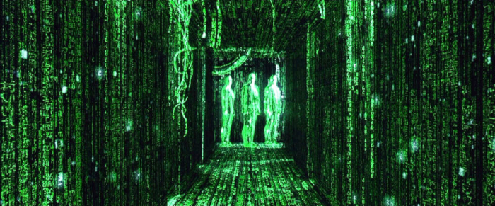
Warning: spoilers ahead.
I think it's safe to say that theater-going audiences were totally unprepared for what was about to hit them when this was released. I know I was, and I even worked at a theater at the time.
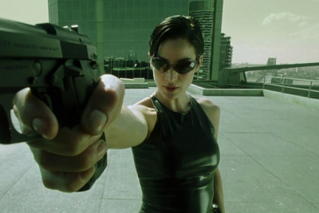
This movie's influence on other films in the genre and on pop culture in general cannot be overstated. It had a huge influence on me as a budding Gnostic.
There have already been countless essays and published works on the themes and philosophical references within this franchise. I may add some of my own musings on the subject here eventually. The original film has been re-examined as a Transgender allegory, for example. In the meantime, the films have a fandom following online, such as the subreddit and some Discord channels.
In Defense Of The Sequels
The sequels had a mixed reaction when they were released, and therefore a more complicated legacy. I may be one of the outliers when I say that I am just as fond of Matrix Reloaded as I am of The Matrix, if not moreso - mainly because of the worldbuilding which took place in the second film, though there may have been other factors as well.
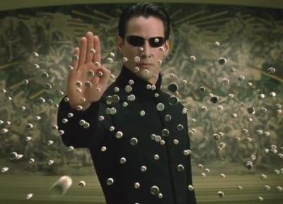
I had mixed feelings about Matrix Revolutons at the time of its release, and I still do to this day. I mean, I understand the gist of what the Architect was trying to say in Reloaded, and how this related to the Oracle's master plan, which culminated in Revolutions (and was expanded on in the later MMO, which we'll get to in a moment.)
Whether the Wachowski Sisters succeeded or not in the execution of this narrative within the framework of the story is up to the individual viewer. However, one of the major points of consternation I kept hearing about after the release of Revolutions was how we could have gone from this:
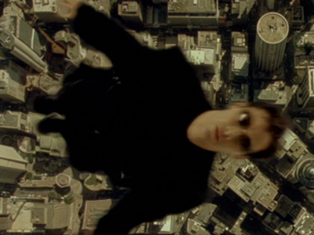
To this:
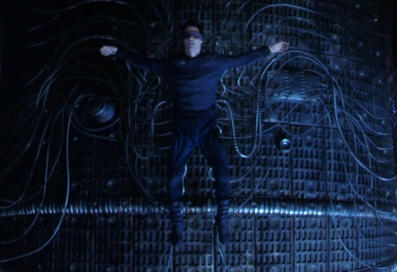
Specifically: I think that going into Revolutions, fans wanted the Architect's statement that the prophesy of The One was just another form of control to turn out to be a lie. "The fact that Neo was able to shock those Sentinels PROVES he's really The One!" some fans proclaimed. Or, it was supposed to mean that the "real world" was itself another layer of the Matrix.
I think that people were just waiting on the edge of their seats for the Architect's smug, cynical, pretentious lecture to be proven wrong; for Neo to prove his Messiahhood, save the day and beat Agent Smith and the Machines once and for all, and to return with Trinity to Zion as Queen's We Are The Champions played. They didn't want to be subject to a thematic philosophical discourse about the nature of free will vs predestination. They very much wanted predestination. They wanted Neo's ultimate triumphant victory to be, shall we say, inevitable?
But this was not the ending we got. And fans felt cheated. Fans felt betrayed. Fans were outraged. In a display of the kind of over-the-top fandom fury that we've witnessed often enough in the years since the Matrix sequels came out (hello, Star Wars fandom!) fans denounced and renounced the trilogy in droves, or just decided to pretend the sequels never happened. Even though technically Neo did prove his Messiahhood in the narrative - by sacrificing himself for others.
But it seemed like there was a point when hatred for the sequels reached performatively extreme "are the Matrix Sequels in the room with us right now?" levels.
I look back on the other fandoms that took off at around the same time with similar themes, and wonder "why did people glom onto these other stories, while very vocally and performatively hating on the Matrix sequels just because the Wachowski Sisters had the audacity to turn their seemingly straightforward story about a heroic prophetic savior and her lover Neo into a philosophical exploration of the theme of determinism vs free will?" But that question may contain its own answer.
I feel like certain people started performatively hating on it even more after Lana and Lilly came out as Transgender - but it was like those of us in the Queer community picked up on the Queer and Trans subtext even before the Sisters came out. For starters: back in the day, the hormone pill was red.
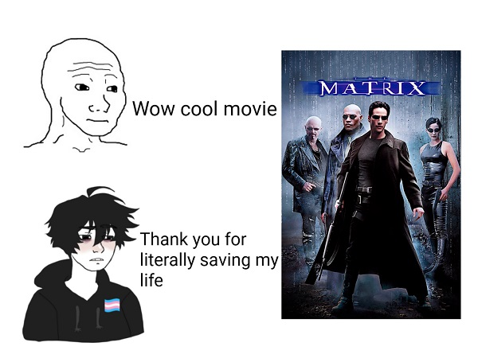
But the thing is: The Matrix films were always deeper than the standard popcorn action fare. This is what made them a cut above other action films of the time. The first film gave us a clear-cut prophesized "chosen one," who is recruited into a resistance against a system which commodifies people. The idea that the prophesy was a lie threw people completely for a loop. "If Neo survived the first film because of the prophesy, then how could the prophesy be a lie?"
And the answer is: the Prophesy of The One was designed to neutralize the threat to the system represented by the existence of the Anomaly and the Awakened humans, with the Anomaly being co-opted into continuing the cycle of commodification for at least five iterations as per the Architect's spiel at the end of Reloaded.
From the Machines' prospective, The Oracle appeared to be going along with this plan on the surface: serving as a kind of double agent to guide the Awakened Humans into following the Prophesy of the One. But her actual master plan may have been to try and move the troubled and unequal relationship between the humans and the machines into the realm of a more equal co-existance.
This is kind of an Americentric viewpoint: but thinking back on the fandom backlash that occured after the Sequels were released, I'm reminded of how after the events of 9/11/2001 and during the run-up to the War In Iraq, people were already looking back on the period just a few years previous when the first film was released with nostalgia goggles. A time when we were all pretty much untroubled by the things which were transpiring in the world by the time the sequels were coming out just a few years later.
And: I get it. Things were starting to get pretty scary by then, and pretty much everything since then has been shitty. As the meme goes, "people in America are losing hope because 9/11 happened, and then literally nothing has ever gotten better since."
People very much wanted to go back the way things were before everything started to suck. But I think a lot of us also wanted to be coddled, and to consume a comforting narrative about how a chosen one would save us and protect us, that it was preordained - inevitable, if you will - just like the story we had been told in 1999.
We certainly didn't want to think about things like causality (especially when lectured by a smug Frenchman during the era of Freedom Fries) when we were being told to just turn our brains off and support whatever the Bush administration wanted to do on the world's stage. And I think this may be partially to blame for the backlash that the sequels recieved.
People love the idea of a "chosen one" fighting evil. But the truth is, corrupt systems that commodify people tend to subvert and co-opt resistance movements in order to neutralize them and suck them back into the cycle of commodification. This was maybe one of the themes of Reloaded?
And the War In Iraq was a war being waged for commodification - a war where people were being sacrificed to Neoliberal Capitalism for Capitalism's sake, to keep its gears grinding as Capitalism itself entered into its late (some say, end) stages. This seems to have been the overriding theme of the George W. Bush era. (But more on that later, in a future essay.)
And I realize that the films were already in production as the events leading up to the War In Iraq were happening, and were not necessarily a response to those events. But IMHO it's impossible (for me at least) to divorce the backlash against the sequels from the time in which the sequels were being released, and the events which were occuring then.
I like to compare the prophesy of The One with the Bene Gesserit's Prophesy of the Kwisatz Haderach and the Missionaria Protectiva from the Dune franchise. A main theme of Frank Herbert's series of novels is about how putting all our faith in charismatic leaders will lead us to war, and results in systems of control and cults of personality that can persist for decades or even centuries after the original leader has long since passed.
However, David Lynch's 1984 adaption of the first novel in the series is a straight-up "Chosen One Winning The War Because The Prophesy Said So/Enlightened Guy Liberates A Planet Through The Power Of Transcendental Meditation" narrative, subverting the intention of the original material (and I love David Lynch, but yeah.) But in the books, the prophesy that the protagonist Paul Atreides fulfilled was a form of control initiated by the Bene Gesserit sect, to influence the evolutionary path of intergalatic human civilization.
Imagine experiencing the shock and confusion I did upon reading the novel Dune for the first time, having grown up loving the film. But the novel contained themes that I needed to be exposed to - ones that would become especially relevant in the years to come.
Because especially over the last 20 years or so, it really does seem like people are just looking for a powerful savior strongman daddy figure to rescue them, rather than becoming their own saviors and then working together to create change. (Which was what we all originally thought Neo's mission was going to be in the sequels after the first film, right? "Neo is going to show people how to resist The Matrix and free themselves!" Like The Kid from The Animatrix.)
Donald Trump isn't Neo. He's not even Smith. He's Royalton from Speed Racer. And Elon Musk is even worse. He's like a combination of Balem and Titus Abrasax from Juputer Ascending.
Anyway, a year or so after the sequels were released, the story of The Matrix was continued in:
the matrix online
The Matrix Online - or as its players called it, MxO. What can I say about an MMO that I very desperately wanted to play, but never actually had the chance?
It came out during a very complicated and difficult period of my life. And even after I sorted out my various life problems, I either had the computer with the required specifications to play it but not the internet connection, or the necessary internet access but not a computer with the specifications required to run it while it was still active. It offically ended the summer of 2009, but loyal fans refused to just let it die. There are still fan sites around, such as the MxO Archive.
I've gotten to play one of the the emulators: MxOEMU. (The other one is Hardline Dreams.)
There is a recap of the game's overarching plot here, by Julio Angel Ortiz. Vesuvius made an audiobook version here. He also has a fan site with swag, and a podcast. DeaconBlue has a podcast as well, DataNodeOne. Go check it all out. Play one of the the emulators. Most of the background images currently displaying on my site are from MxOEMU.
the matrix resurrections
In 2019, a fourth film was announced. And it was like:
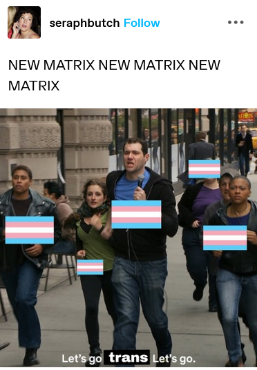
The Matrix Resurections was released on December 22, 2021 and was largely excoriated by pop cultural talking heads - but:
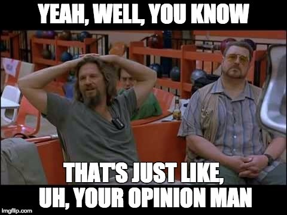
Because this movie is awesome.
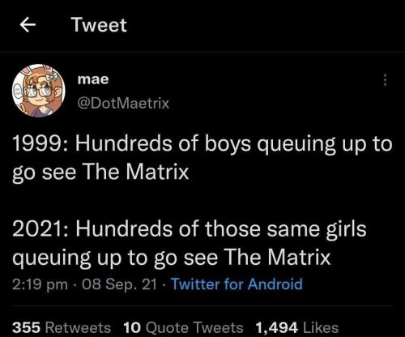

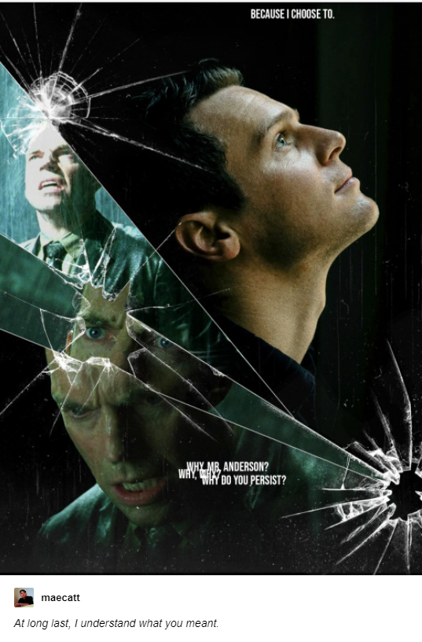
And it feels reclaimed from those who it was expressly not for (i.e. Fascist and/or Reactionary Incel/Manosphere Nitwits)
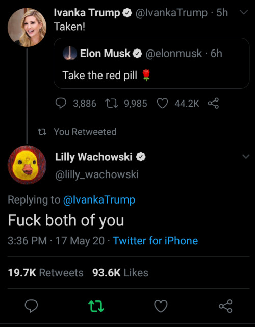
As far as I'm concerned, the only thing missing from Matrix Resurrections was these two:
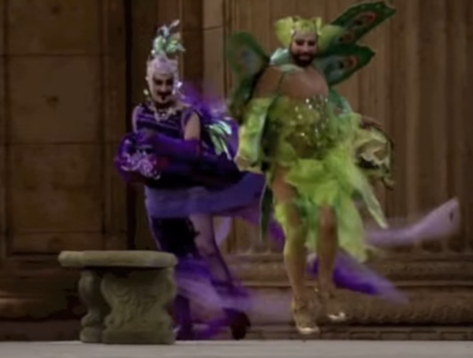
I can't think of a better ending, frankly. This movie was everything I wanted it to be.
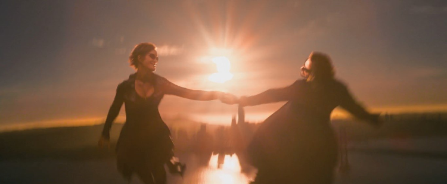